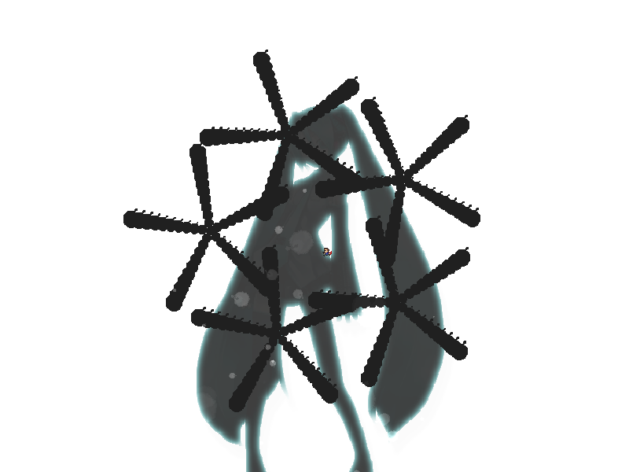
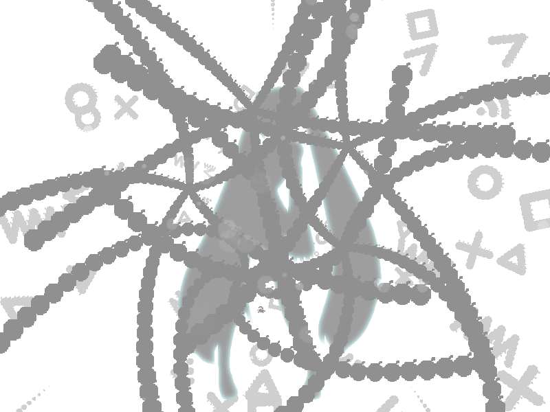

chapter12 - section3

| creator | segment | label | jump |
|---|---|---|---|
| NN | 2:59.30~3:00.40 | P | infinite |
角度のみが一定の条件のもとランダムな弾幕です。
2:59.30~2:59.90における中心が異なる5つのアスタリスク状弾幕（fig.12-3.1.a）に関して、これらはそれぞれ各時刻において中心からみたプレイヤーの角度に対して最も開いた形状をとります。
与えられた状況に対して、2:59.90以降における自機狙い弾幕（fig.12-3.1.b）を適切に誘導することを目的としています。

